Illustrated archival rendering from SRAM’s English digital manual, retrieved September 13, 2026. Text, tables, captions, and images are preserved locally. Layout is reconstructed; this is not SRAM’s original interactive viewer. All variants are shown together; section applicability labels are retained. Linked external manuals and websites are separate references and are not included.
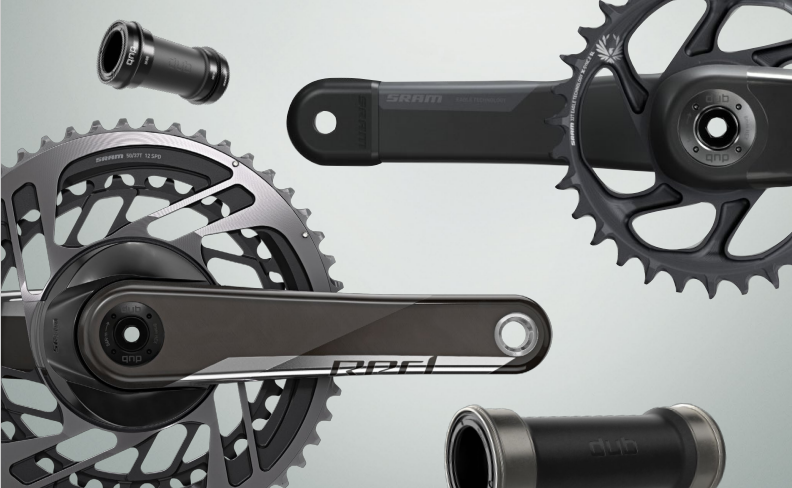
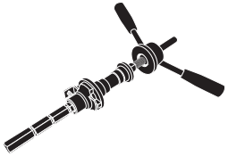
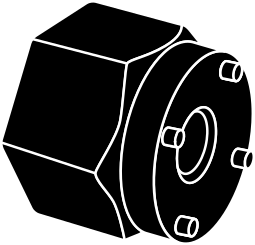
Safety First!
We care about YOU. Please, always wear your safety glasses and protective gloves when servicing SRAM products. Protect yourself! Wear your safety gear!
You must read and understand the Safety Instructions document included with your product before proceeding with the installation. Improperly installed components are extremely dangerous and could result in severe and/or fatal injuries. If you have any questions about the installation of these components, consult a qualified bicycle mechanic. This document is also available on www.sram.com.
Click on the icon at the top right corner of the screen to display the color legend and the complete list of tools and supplies for this manual in a scrollable dropdown list.
The colors and symbols featured in this manual correspond to specific actions or procedures. A detailed description for each color and symbol is contained in the dropdown.
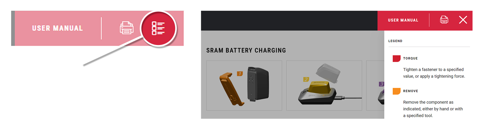
Use the dropdown lists in the SELECT FILTERS: window at the top left of the page to select the preferred language, product model code, and instructional content. Product instructional content filters will vary.
Language Filter: Select Language first. When a new language is selected, all other selected filters will reset.
All non-Language Filters: To reset a non-language filter, click on the X.
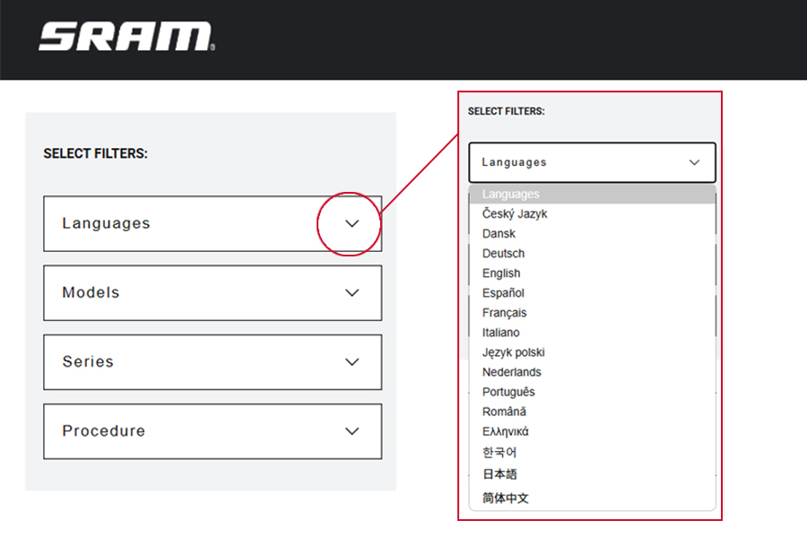
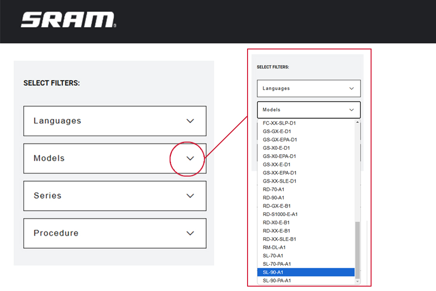
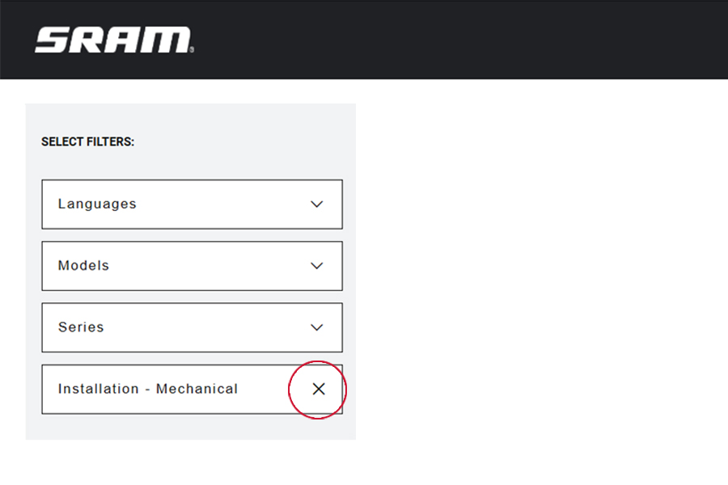
Product model code and specification details can be identified with the serial number on the product. Model codes can be used to identify the product type, series name, model name, and product version associated with the production model year. Product details can be used to identify spare parts, service kit, and lubricant compatibility.
Model Code example: RD-XX-E-B1
RD = Product Type - Rear Derailleur
XX = Platform/Series - XX
B1 = Version - (B - Second generation, 1 - first iteration)
To identify the model code, locate the serial number on the product and enter it into the Search by Model Name or Serial Number field at www.sram.com/service.
Your product's appearance may vary from those pictured in this manual.
Images and examples pictured are for conceptual purposes and may vary from product design, appearance, and performance.
Consult sram.com/service whenever a separate manual is referenced in this document.
Read the full warranty policy for your components at sram.com/en/service/warranty.
For information about trademarks used in this manual, visit sram.com/website-terms-of-use.
Highly specialized tools and supplies are required for the replacement and maintenance of your SRAM components. We recommend that you have a qualified SRAM dealer work on your SRAM components.
Applies to: [{"key": "models", "values": ["bb-dub-bb30-a1", "bb-dub-bsa-a1", "bb-dub-pf30-a1", "bb-dub-pf-a1", "bb-dub-t47-a1", "bb-dub-it-a1"]}]
1. Outer left, non-drive side spacer | 4. Frame shell width | 7. Outer right, drive side spacer |
2. Left side cup | 5. Inner right, drive side spacer | |
3. Inner left, non-drive side spacer | 6. Right side cup and center tube |
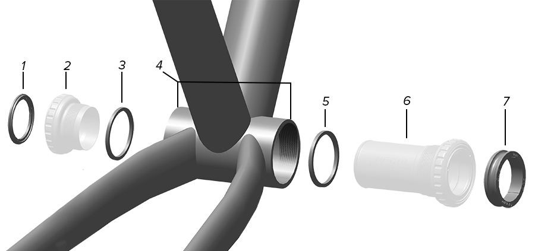
Applies to: [{"key": "models", "values": ["bb-dub-bsa-a1", "bb-dub-pf-a1", "bb-dub-pf30-a1", "bb-dub-bb30-a1"]}]
Frame Shell Interface and Width (mm) | Crankset | Outer Left Spacer (mm) | Inner Left Spacer (mm) | Inner Right Spacer (mm) | Outer Right Spacer (mm) |
|---|---|---|---|---|---|
BSA (68) | MTB | - | 2.5 | 2.5 | 4.5 |
BSA (68) | MTB WIDE | 3 | 2.5 | 2.5 | 7.5 |
BSA (73) | MTB | - | - | - | 4.5 |
BSA (73) | MTB WIDE | 3 | - | - | 7.5 |
BSA (73) | Super Boost + | 4.5 | - | - | 9 |
BSA (73 Ai) | MTB Ai | 2.5 | 2.5 | - | 10.5 |
BSA (73 with Chain Guide) | MTB | - | - | Chain Guide | 2 |
BSA (73 with Chain Guide) | MTB Wide | 3 | - | Chain Guide | 5 |
BSA (73 with Chain Guide) | Super Boost + | 4.5 | - | Chain Guide | 6.5 |
BSA (83) | DH | - | 2.5 | 2.5 | 4.5 |
BSA (83 Ai) | MTB Ai | - | - | - | 5.5 |
BSA (100) | Fat | 2 | 2.5 | 2.5 | 6 |
PressFit (89.5) | MTB | - | - | - | 4.5 |
PressFit (89.5) | MTB Wide | 3 | - | - | 7.5 |
PressFit (92) | MTB | - | - | - | 2 |
PressFit (92) | MTB Wide | 3 | - | - | 5 |
PressFit (92) | Super Boost + | 4.5 | - | - | 6.5 |
PressFit (104.5) | DH | - | - | - | 4.5 |
PressFit (107) | DH | - | - | - | 2 |
PressFit (121) | Fat | 2 | - | - | 6 |
PressFit 30 (73) | MTB | - | - | - | 4.5 |
PressFit 30 (73) | MTB Wide | 3 | - | - | 7.5 |
PressFit 30 (83) | MTB Wide | 3 | - | - | 7.5 |
PressFit 30 (83) | DH* | 3 | - | - | 6.5 |
PressFit 30 (83 Ai) | MTB Wide | 3 | - | - | 7.5 |
PressFit 30 (83 Ai) | MTB Ai | - | - | - | 5.5 |
PressFit 30 (100) | Fat | 4.5 | - | - | 8.5 |
BB30 (73) | MTB | - | - | - | 4.5 |
BB30 (73) | MTB Wide | 3 | - | - | 7.5 |
BB30 (83 Ai) | MTB Ai | - | - | - | 5.5 |
*PressFit 30 DH bottom brackets must use the crankset with the words DUB DH BSA/PF30/PF marked on the spindle.
Applies to: [{"key": "models", "values": ["bb-dub-bsa-a1", "bb-dub-it-a1", "bb-dub-t47-a1", "bb-dub-pf-a1", "bb-dub-pf30-a1", "bb-dub-bb30-a1"]}]
Frame Shell Interface and Width (mm) | Crankset | Outer Left Spacer (mm) | Inner Left Spacer (mm) | Inner Right Spacer (mm) | Outer Right Spacer (mm) |
|---|---|---|---|---|---|
BSA (68) | Road | - | - | - | 3 |
BSA (68) | Road - Wide | 2.5 | - | - | 5.5 |
BSA (73) | Road - Wide | - | - | - | 3 |
Italian (70) | Road | - | - | - | 2 |
Italian (70) | Road - Wide | 2.5 | - | - | 4.5 |
T47 (68) | Road | - | - | - | 3 |
T47 (68) | Road - Wide | 2.5 | - | - | 5.5 |
T47 (77-A) | Road | - | - | - | 3 |
T47 (77-A) | Road - Wide | 2.5 | - | - | 5.5 |
T47 (85.5) | Road | - | - | - | 3 |
T47 (85.5 | Road - Wide | 2.5 | - | - | 5.5 |
PressFit (86.5) | Road | - | - | - | 3 |
PressFit (86.5) | Road - Wide | 2.5 | - | - | 5.5 |
PressFit 30 (68) | Road | - | - | - | 3 |
PressFit 30 (68) | Road - Wide | 2.5 | - | - | 5.5 |
PressFit 30 (73) | Road - Wide | - | - | - | 3 |
PressFit 30 (73-A) | Road | - | - | - | 3 |
PressFit 30 (73-A) | Road - Wide | 2.5 | - | - | 5.5 |
PressFit 30 (79-A) | Road | - | - | - | 3 |
PressFit 30 (79-A) | Road - Wide | 2.5 | - | - | 5.5 |
PressFit 30 (83-A) | Road - Ai | 6 | - | - | 9 |
BB386 (86.5) | Road | - | - | - | 2 |
BB386 (86.5) | Road - Wide | 2.5 | - | - | 4.5 |
BB30 (68) | Road | - | - | - | 3 |
BB30 (68) | Road - Wide | 2.5 | - | - | 5.5 |
BB30 (73) | Road - Wide | - | - | - | 3 |
BB30 (73-A) | Road | - | - | - | 3 |
BB30 (73-A) | Road - Wide | 2.5 | - | - | 5.5 |
BB30 (83-A) | Road - Ai | - | - | - | 4.5 |
Applies to: [{"key": "models", "values": ["bb-dub-pf30-a1", "bb-dub-pf-a1", "bb-dub-bb30-a1"]}, {"key": "bottom-bracket-type", "values": ["dub-bb30", "dub-pf30", "dub-pressfit", "dub-bb386"]}]
SRAM DUB BB30 bottom brackets are compatible with frame shells with an inner diameter of 42 mm.
DUB PressFit 30 and BB386 bottom brackets are compatible with frame shells with an inner diameter of 46 mm.
DUB PressFit bottom brackets are compatible with frame shells with an inner diameter of 41 mm.
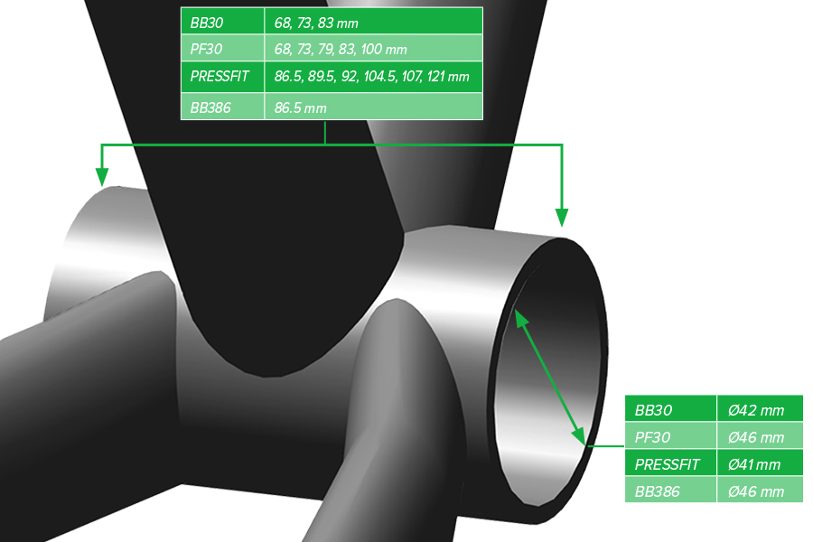
Applies to: [{"key": "models", "values": ["bb-dub-t47-a1", "bb-dub-it-a1", "bb-dub-bsa-a1"]}, {"key": "bottom-bracket-type", "values": ["dub-bsa", "dub-italian", "t47"]}]
SRAM DUB BSA bottom brackets are compatible with frame shells with English threads.
SRAM DUB T47 bottom brackets are compatible with frame shells with M47 x 1 threads.
SRAM DUB Italian bottom brackets are compatible with frame shells with 36 mm x 24 tpi threads.
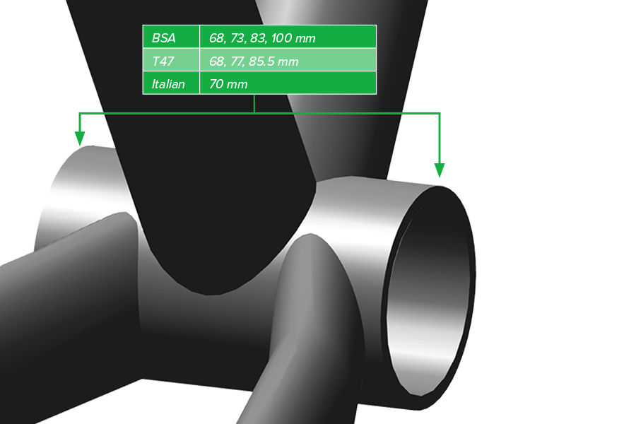
Applies to: [{"key": "models", "values": ["bb-bb30-a1", "bb-dub-bsa-a1", "bb-dub-it-a1", "bb-dub-pf-a1", "bb-dub-pf30-a1", "bb-dub-t47-a1"]}]
Spray isopropyl alcohol on the bottom bracket shell and clean it. The shell should be free of dirt, paint, grease, and metal burrs. For best results, have your frame faced by a professional bicycle mechanic.
Consult your frame manufacturer to confirm the bottom bracket is compatible with the bottom bracket shell in your frame. Removing the center tube from the bottom bracket to accommodate internal brake hose routing is not recommended, and may shorten the lifespan of the bottom bracket. Your product's appearance may differ from the pictures contained in this
publication.
1. Apply grease to the inside of the frame shell.
2. Prepare the bottom bracket for installation. Remove the left side cup from the center tube. Remove the left side outer spacer, if applicable. Remove the right side outer spacer from the right side cup.
Make sure the right and left spacers are removed before installing the cups. Failure to remove the spacer(s) will damage the bearings.
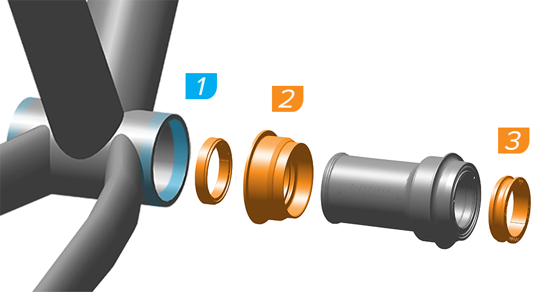
Applies to: [{"key": "models", "values": ["bb-dub-bsa-a1"]}, {"key": "bottom-bracket-type", "values": ["dub-bsa"]}]
1. Install the inner non-drive side spacer if indicated by the chart.
2. Use a 12-notch external bottom bracket tool to tighten the non-drive side cup into the frame.
3. Install the left external spacer as indicated by the spacer chart.
4. Install the inner drive side spacer if indicated by the chart.
5. Use a 12-notch external bottom bracket tool to tighten the drive side cup into the frame.
6. Install the right external spacer as indicated by the spacer chart.
The right side cup for BSA threads is reverse threaded.
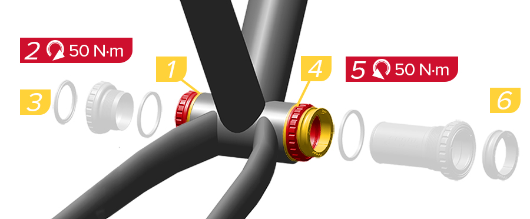
DUB BSA Spacer Chart
Frame Shell Interface and Width (mm) | Crankset | Outer Left Spacer (mm) | Inner Left Spacer (mm) | Inner Right Spacer (mm) | Outer Right Spacer (mm) |
|---|---|---|---|---|---|
BSA (68) | MTB | - | 2.5 | 2.5 | 4.5 |
BSA (68) | MTB WIDE | 3 | 2.5 | 2.5 | 7.5 |
BSA (73) | MTB | - | - | - | 4.5 |
BSA (73) | MTB WIDE | 3 | - | - | 7.5 |
BSA (73) | Super Boost + | 4.5 | - | - | 9 |
BSA (73 Ai) | MTB Ai | 2.5 | 2.5 | - | 10.5 |
BSA (73 with Chain Guide) | MTB | - | - | Chain Guide | 2 |
BSA (73 with Chain Guide) | MTB Wide | 3 | - | Chain Guide | 5 |
BSA (73 with Chain Guide) | Super Boost + | 4.5 | - | Chain Guide | 6.5 |
BSA (83) | DH | - | 2.5 | 2.5 | 4.5 |
BSA (83 Ai) | MTB Ai | - | - | - | 5.5 |
BSA (100) | Fat | 2 | 2.5 | 2.5 | 6 |
BSA (68) | Road | - | - | - | 3 |
BSA (68) | Road - Wide | 2.5 | - | - | 5.5 |
BSA (73) | Road - Wide | - | - | - | 3 |
Applies to: [{"key": "models", "values": ["bb-dub-bb30-a1", "bb-dub-pf30-a1", "bb-dub-pf-a1"]}, {"key": "bottom-bracket-type", "values": ["dub-bb30", "dub-pf30", "dub-pressfit"]}]
1. Use a bottom bracket bearing press tool or a headset press to install the left side cup into the non-drive side of the frame according to the tool manufacturer's instructions.
2. Repeat the installation with the right side cup and center tube into the drive side of the frame.
Make sure to guide the center tube parallel through the bottom bracket shell. The center tube should not contact the frame or any cable(s).
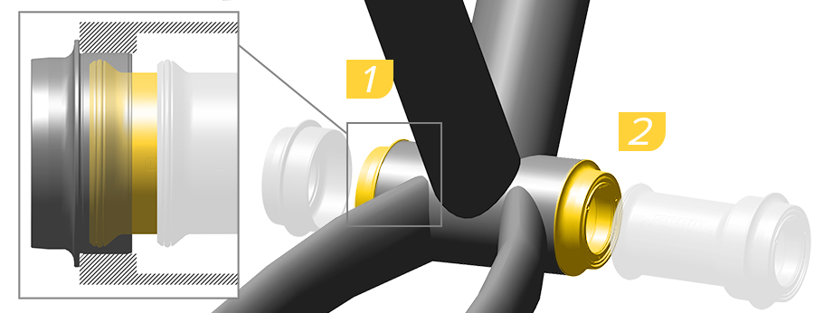
3-4. Install the spacer(s) according to the Crankset and Bottom Bracket table.
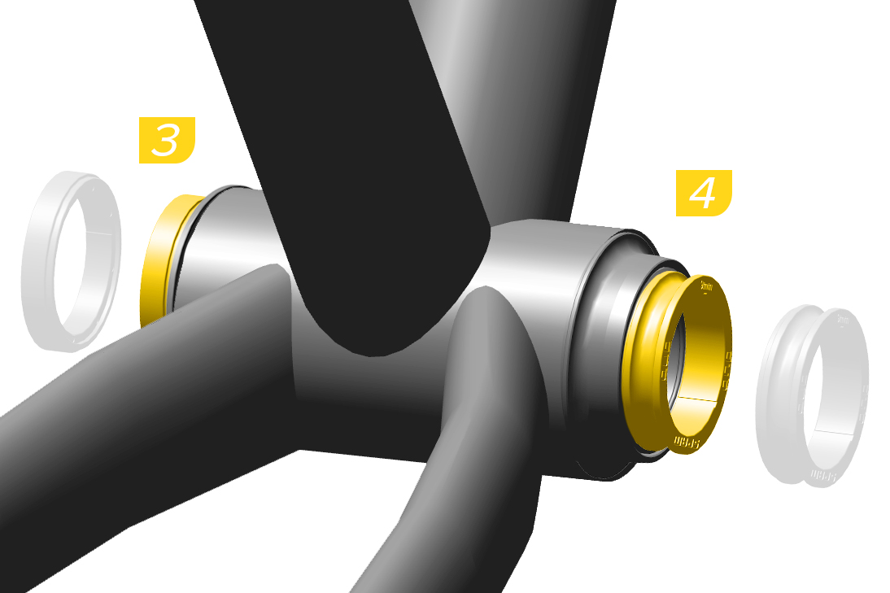
DUB PressFit 30 Spacer Chart
Frame Shell Interface and Width (mm) | Crankset | Outer Left Spacer (mm) | Inner Left Spacer (mm) | Inner Right Spacer (mm) | Outer Right Spacer (mm) |
|---|---|---|---|---|---|
PressFit 30 (73) | MTB | - | - | - | 4.5 |
PressFit 30 (73) | MTB Wide | 3 | - | - | 7.5 |
PressFit 30 (83) | MTB Wide | 3 | - | - | 7.5 |
PressFit 30 (83) | DH* | 3 | - | - | 6.5 |
PressFit 30 (83 Ai) | MTB Ai | - | - | - | 5.5 |
PressFit 30 (83 Ai) | MTB Wide | 3 | - | - | 7.5 |
PressFit 30 (100) | Fat | 4.5 | - | - | 8.5 |
PressFit 30 (68) | Road | - | - | - | 3 |
PressFit 30 (68) | Road - Wide | 2.5 | - | - | 5.5 |
PressFit 30 (73) | Road - Wide | - | - | - | 3 |
PressFit 30 (73-A) | Road | - | - | - | 3 |
PressFit 30 (73-A) | Road - Wide | 2.5 | - | - | 5.5 |
PressFit 30 (79-A) | Road | - | - | - | 3 |
PressFit 30 (79-A) | Road - Wide | 2.5 | - | - | 5.5 |
PressFit 30 (83-A) | Road - Ai | 6 | - | - | 9 |
*PressFit 30 DH bottom brackets must use the crankset with the words DUB DH BSA/PF30/PF marked on the spindle. Failure to use the DUB DH BSA/PF30/PF crankset will cause poor performance over the life of your system.
DUB BB30 Spacer Chart
Frame Shell Interface and Width (mm) | Crankset | Outer Left Spacer (mm) | Inner Left Spacer (mm) | Inner Right Spacer (mm) | Outer Right Spacer (mm) |
|---|---|---|---|---|---|
BB30 (73) | MTB | - | - | - | 4.5 |
BB30 (73) | MTB Wide | 3 | - | - | 7.5 |
BB30 (68) | Road | - | - | - | 3 |
BB30 (68) | Road - Wide | 2.5 | - | - | 5.5 |
BB30 (73) | Road - Wide | - | - | - | 3 |
BB30 (73-A) | Road | - | - | - | 3 |
BB30 (73-A) | Road - Wide | 2.5 | - | - | 5.5 |
BB30 (83-A) | Road - Ai | - | - | - | 4.5 |
DUB PressFit Spacer Chart
Frame Shell Interface and Width (mm) | Crankset | Outer Left Spacer (mm) | Inner Left Spacer (mm) | Inner Right Spacer (mm) | Outer Right Spacer (mm) |
|---|---|---|---|---|---|
PressFit (89.5) | MTB | - | - | - | 4.5 |
PressFit (89.5) | MTB Wide | 3 | - | - | 7.5 |
PressFit (92) | MTB | - | - | - | 2 |
PressFit (92) | MTB Wide | 3 | - | - | 5 |
PressFit (92) | Super Boost + | 4.5 | - | - | 6.5 |
PressFit (104.5) | DH | - | - | - | 4.5 |
PressFit (107) | DH | - | - | - | 2 |
PressFit (121) | Fat | 2 | - | - | 6 |
PressFit (86.5) | Road | - | - | - | 3 |
PressFit (86.5) | Road - Wide | 2.5 | - | - | 5.5 |
Applies to: [{"key": "models", "values": ["bb-dub-t47-a1"]}, {"key": "bottom-bracket-type", "values": ["t47"]}]
1. Use a 16-notch external bottom bracket tool to tighten the non-drive side cup into the frame.
2. Install the left external spacer as indicated by the spacer chart.
3. Use a 16-notch external bottom bracket tool to tighten the drive side cup into the frame.
4. Install the right external spacer as indicated by the spacer chart.
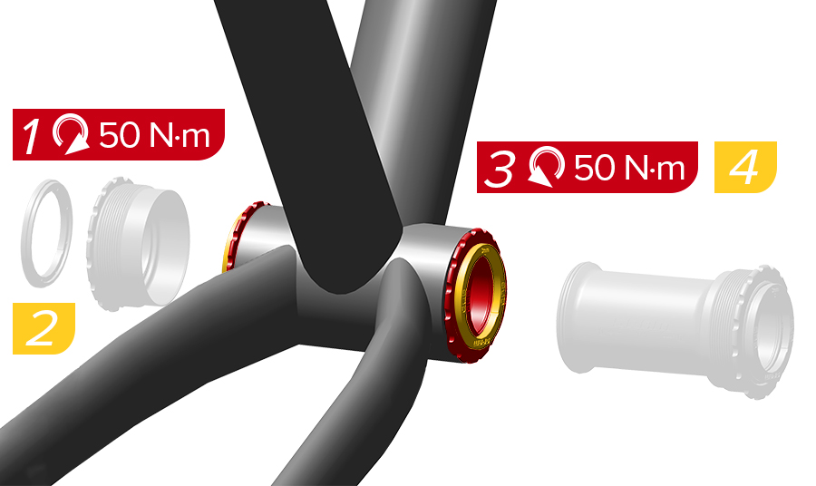
DUB T47 Spacer Chart
Frame Shell Interface and Width (mm) | Crankset | Outer Left Spacer (mm) | Inner Left Spacer (mm) | Inner Right Spacer (mm) | Outer Right Spacer (mm) |
|---|---|---|---|---|---|
T47 (68) | Road | - | - | - | 3 |
T47 (68) | Road - Wide | 2.5 | - | - | 5.5 |
T47 (77-A) | Road | - | - | - | 3 |
T47 (77-A) | Road - Wide | 2.5 | - | - | 5.5 |
T47 (85.5) | Road | - | - | - | 3 |
T47 (85.5 | Road - Wide | 2.5 | - | - | 5.5 |
Applies to: [{"key": "models", "values": ["bb-dub-pf30-a1"]}, {"key": "bottom-bracket-type", "values": ["dub-bb386"]}]
1. Use a bottom bracket bearing press tool or a headset press to install the left side cup into the non-drive side of the frame according to the tool manufacturer's instructions.
2. Use the included BB386 installation tool to install the right side cup and center tube into the drive side of the frame.
Make sure to guide the center tube parallel through the bottom bracket shell. The center tube should not contact the frame or any cable(s).
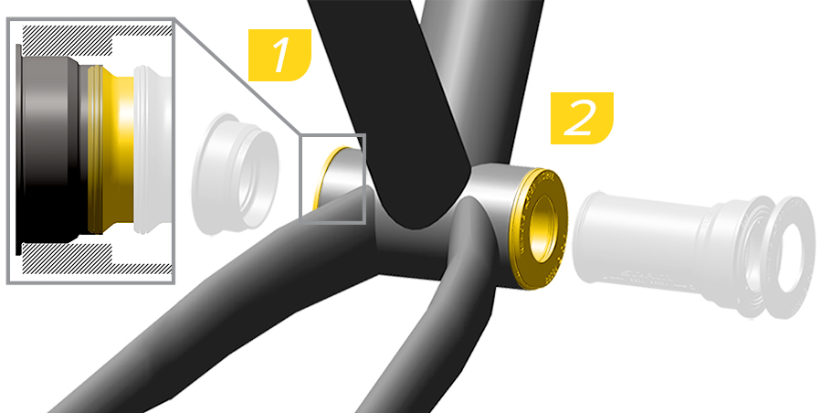
3. Remove the BB386 installation tool.
4. Install the spacer(s) according to the chart.
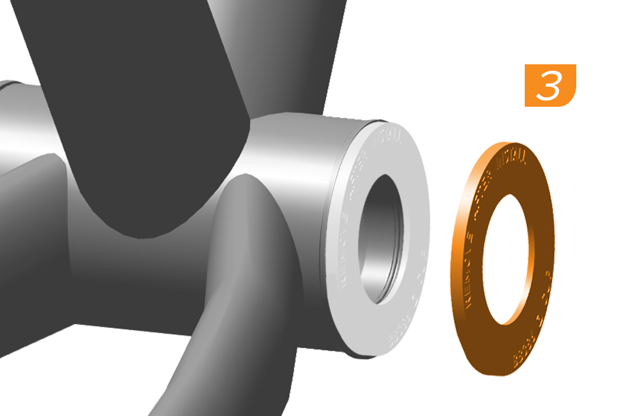
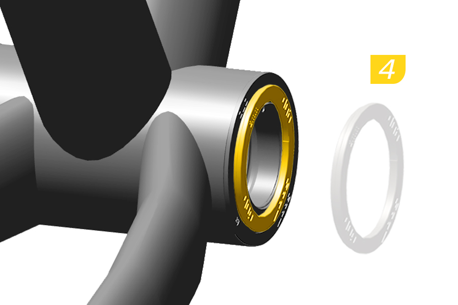
DUB BB386 Spacer Chart
Frame Shell Interface and Width (mm) | Crankset | Outer Left Spacer (mm) | Inner Left Spacer (mm) | Inner Right Spacer (mm) | Outer Right Spacer (mm) |
|---|---|---|---|---|---|
BB386 (86.5) | Road | - | - | - | 2 |
BB386 (86.5) | Road - Wide | 2.5 | - | - | 4.5 |
Applies to: [{"key": "models", "values": ["bb-dub-it-a1"]}, {"key": "bottom-bracket-type", "values": ["dub-italian"]}]
1. Use a 12-notch external bottom bracket tool to tighten the non-drive side cup into the frame.
2. Install the left external spacer as indicated by the spacer chart.
3. Use a 12-notch external bottom bracket tool to tighten the drive side cup into the frame.
4. Install the right external spacer as indicated by the spacer chart.
The left and right cups for Italian threads are right hand threaded.
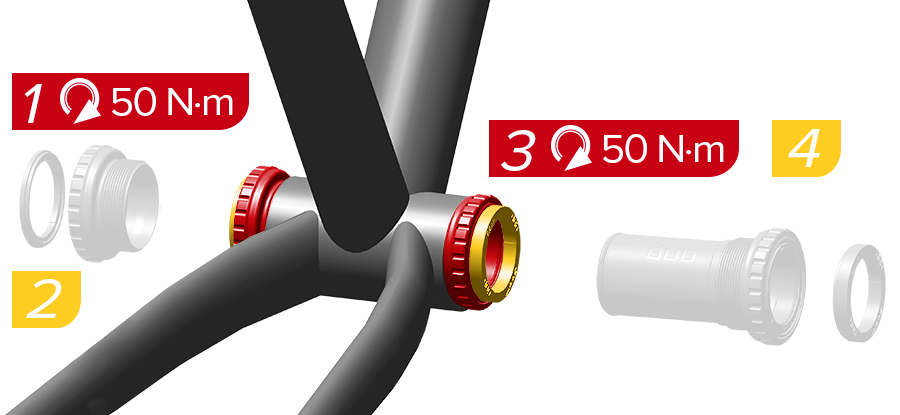
DUB Italian Spacer Chart
Frame Shell Interface and Width (mm) | Crankset | Outer Left Spacer (mm) | Inner Left Spacer (mm) | Inner Right Spacer (mm) | Outer Right Spacer (mm) |
|---|---|---|---|---|---|
Italian (70) | Road | - | - | - | 2 |
Italian (70) | Road - Wide | 2.5 | - | - | 4.5 |
Applies to: [{"key": "procedure", "values": ["installation-axs"]}]
1. Apply grease to the indicated areas on the spindle.
2. Install the non-drive side crankarm and spindle into the bottom bracket. Make sure the blue o-rings remain installed in the gland in the left and right bottom bracket cups during spindle installation.
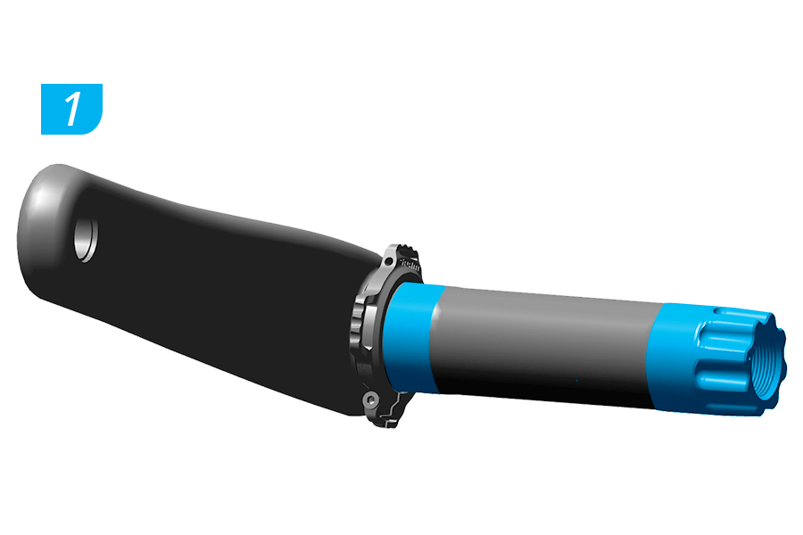
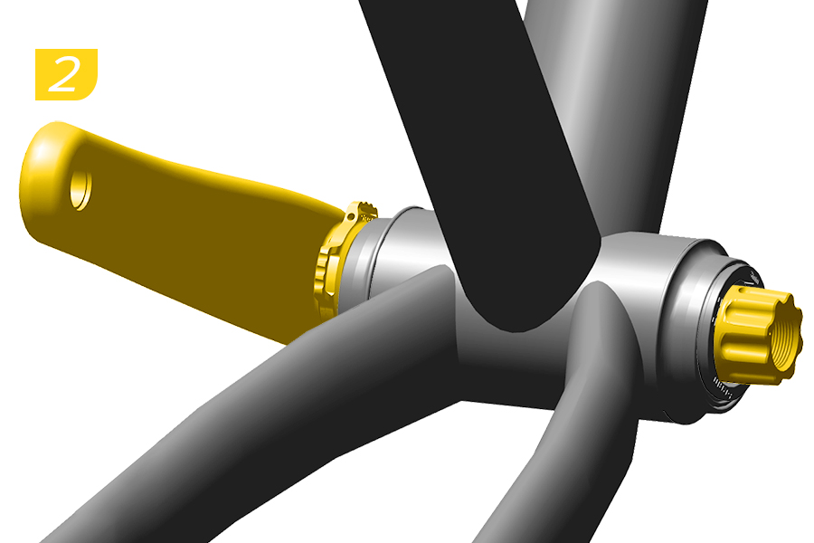
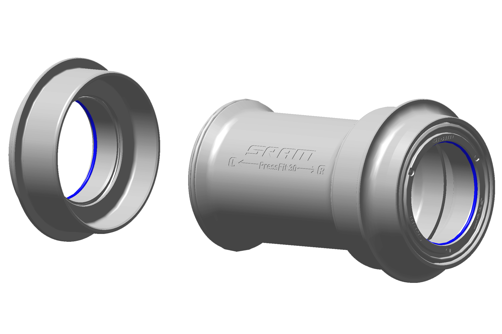
3. Install the drive-side crankarm onto the spindle.
4. Use a torque wrench with an 8 mm hex bit socket to tighten the crank arm bolt to 54 N·m (478 in-lb).
5. Use a rubber or plastic mallet to tap the drive side crank arm until it is fully seated.
6. Remove play from the system by turning the preload adjuster in the + direction until it stops or makes contact with the bearing shield.
7. Use a 2 mm hex wrench to tighten the bolt until the adjuster edges touch.
Do not use a ball-end style hex wrench to tighten the preload adjuster. Do not overtighten the preload adjuster as this could damage the bearing. Do not overtighten the bolt. It is okay if there is a gap in the adjuster, as long as the top edges touch.
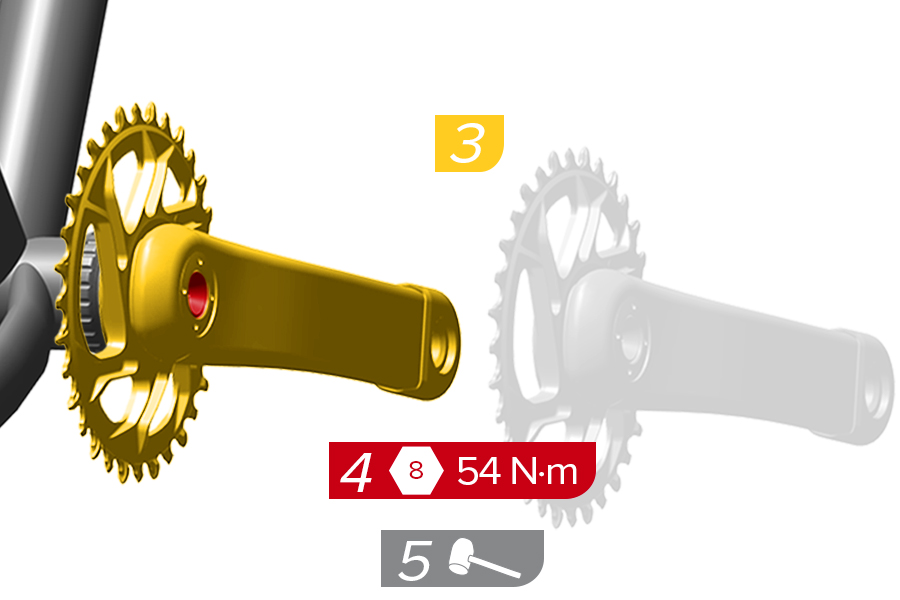
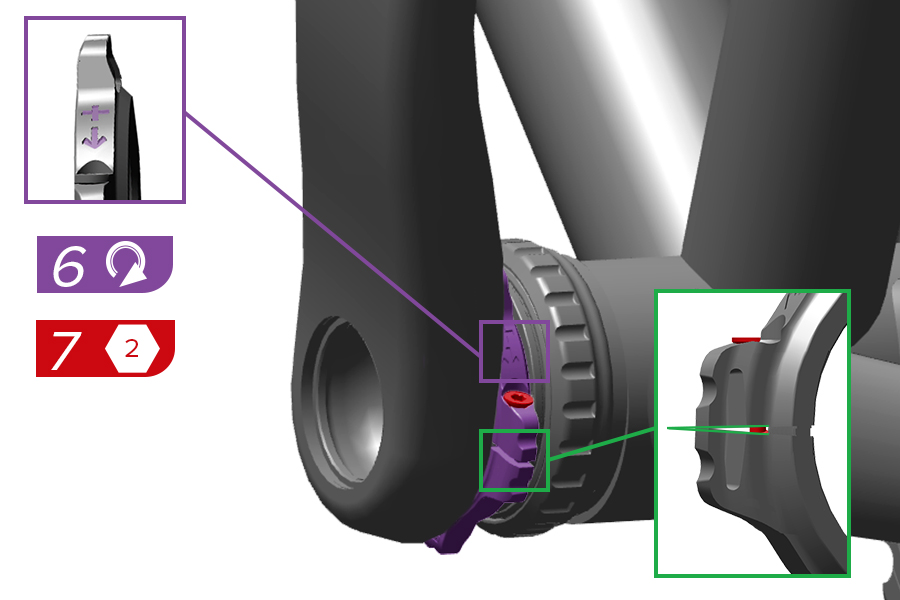
8. Check the crankset for play by rocking the crankarms back and forth.
If there is play in the crankset, remove the crankarms and apply additional grease to the spindle. Turn the preload adjuster in the opposite direction of the + sign until it stops. Repeat the installation procedure until play is eliminated.
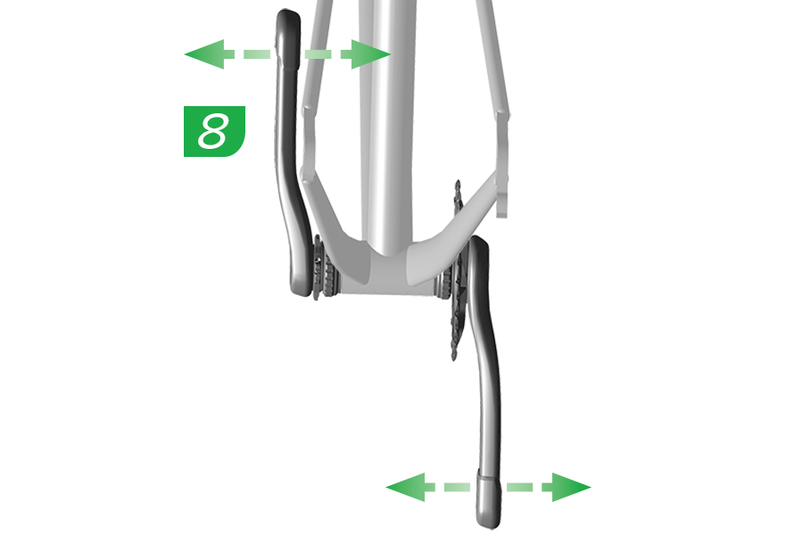
9. Apply grease to the crank arm pedal threads.
10. Install the washer between the crank arm and pedal.
11. Tighten the pedal shaft to 54 N·m (477 in-lb) unless otherwise specified by the pedal manufacturer.
The non-drive side pedal bore is reverse threaded.
Make sure the pedal shaft threads do not extend past the back of the crankarm. Do not use the pedal if the shaft is exposed. This could interfere with the frame or chain and result in a crash.
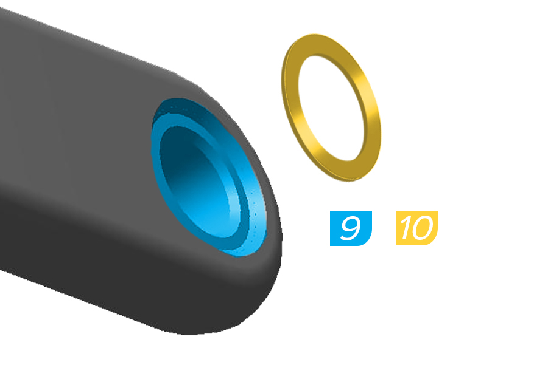
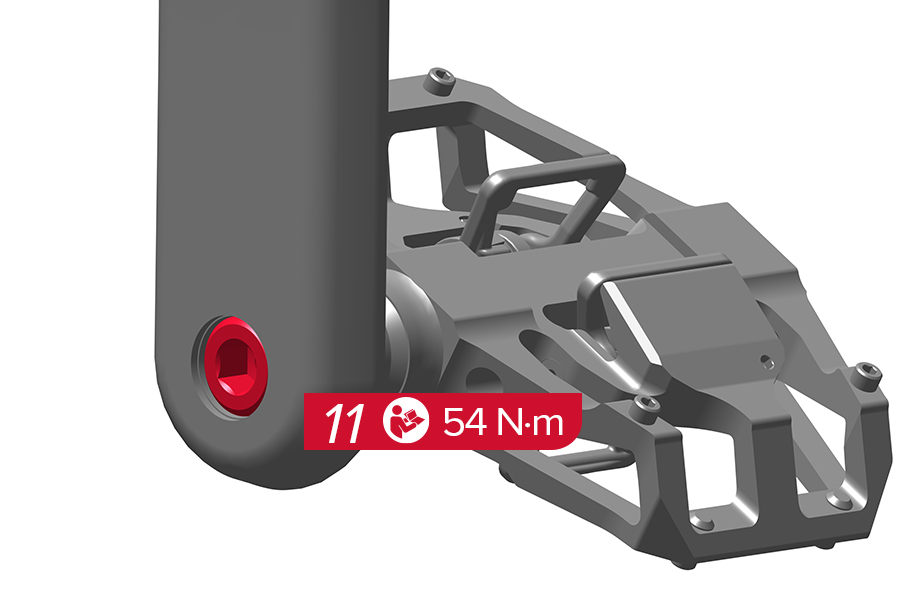
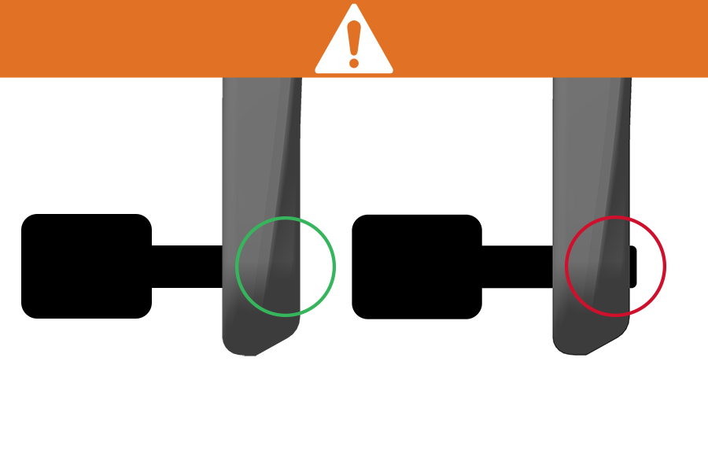
1. Use an 8 mm hex wrench to loosen the crank arm bolt.
2. Remove the drive side crankarm.
3. Use a rubber or plastic mallet to lightly tap the spindle from the drive side.
4. Remove the crank arm.
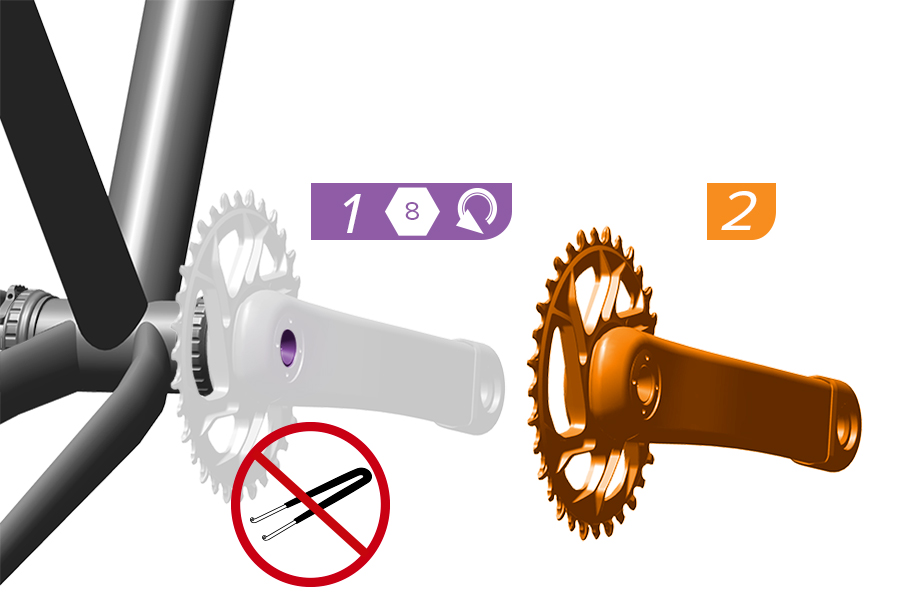
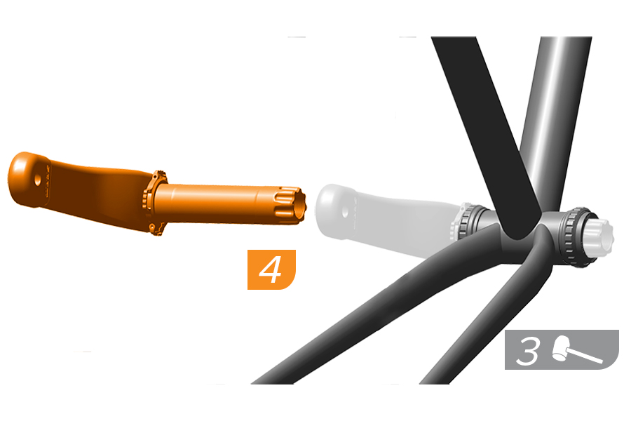
5. Loosen the bolt until the preload adjuster will rotate. Do not exceed a 1 mm gap.
6. Rotate the preload adjuster in the opposite direction of the adjuster arrow until it stops or makes contact with the crankarm.
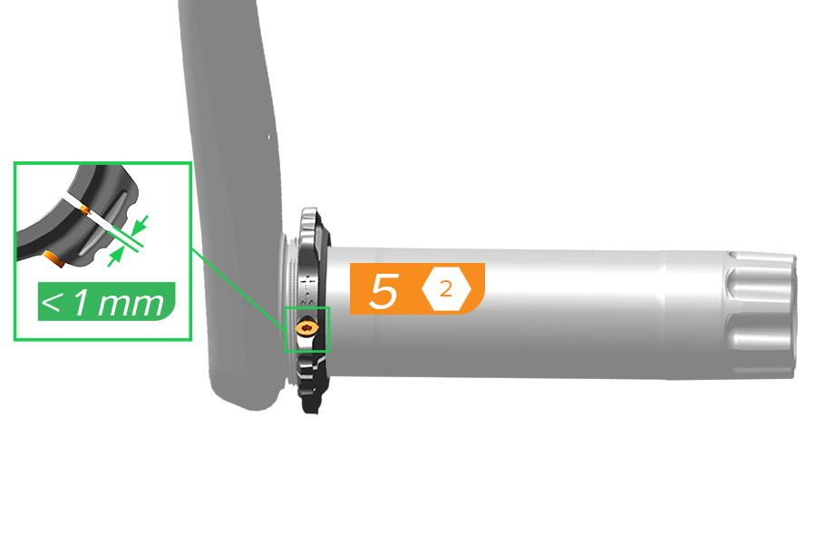
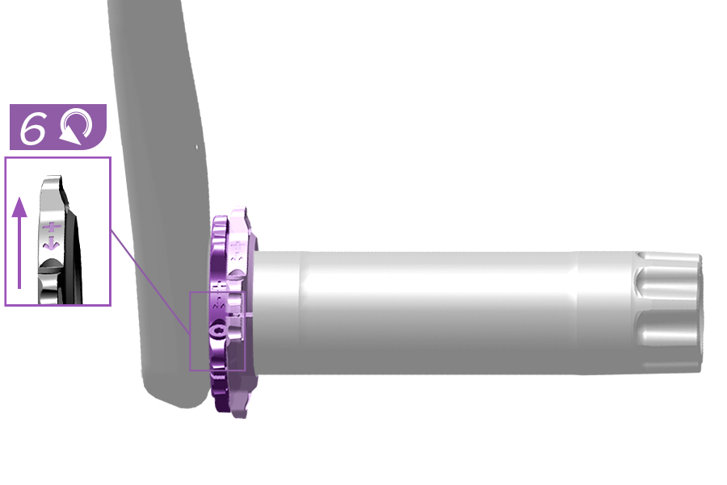
Inspect the crankset and bottom bracket for play, and tighten as needed. Clean the crankset and bottom bracket with water and mild soap.
Replace the bottom bracket when it no longer rotates smoothly.
Do not clean the crankset or bottom bracket with a power washer.
Consult the Chainrings and Spiders User Manual on www.sram.com for complete torque specifications.
Failure to check your chainring bolts could lead to the chainring bolts backing out of the chainring.
To install and tighten the self-extractor cap only, perform steps 3-5.
1. Place the washer onto the crank bolt.
2. Install the crank bolt assembly.
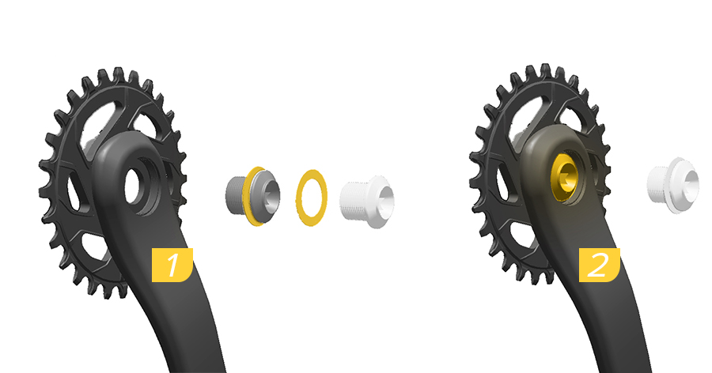
3-4. Apply new threadlocker if not present. Use the Abbey Bike Tools Dub Self-Extracting Cap Tool (A) to install the self-extracting cap or use a 2.3 mm spanner (B). If the cap does not include spanner holes, use a 10 mm Hex Tool (C)*.
5. Tighten the self-extracting cap counter-clockwise to 14 N·m (123 in-lb) when using the Abbey Bike Tools DUB Self-Extracting Cap Tool (A), 10 mm Hex Tool (C)* or hand tight** when using a spanner (B).
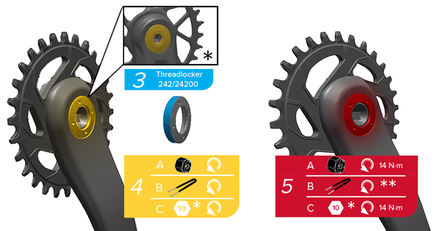
The self-extracting cap is reverse threaded.
♻For recycling and environmental compliance information, please visit www.sram.com/en/company/about/environmental-policy-and-recycling